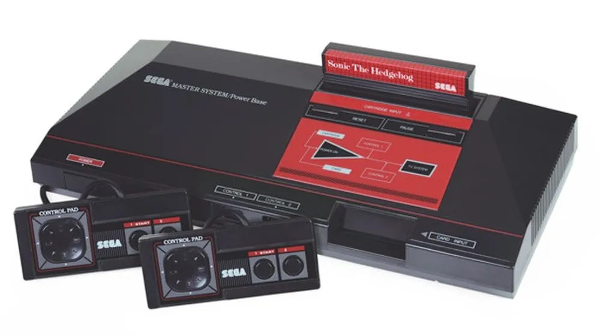
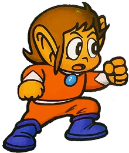
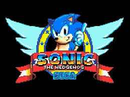
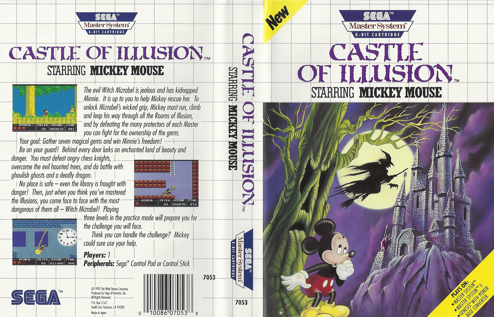
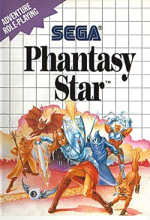

Retro Gamer Cave
Master System
O grande rival do Nintendinho.
Empresa fabricante:SEGA
Desenvolvido por:Mark Cerny
Ano de lancamento:1987

O Sega Master System foi um console de videogame de 8 bits lançado pela Sega em 1986 para concorrer com o Nintendo Entertainment System(LEIA MAIS SOBRE O NESAQUI.)No Japão, ele teve pouco sucesso devido aos contratos de exclusividade da Nintendo com as produtoras de jogos. Nos Estados Unidos, ele também não conseguiu se popularizar, sendo vendido pela Tonka e depois relançado como Master System II, com algumas funções removidas.

Na Europa e na Austrália, o MS foi bem aceito e se tornou popular, recebendo jogos de desenvolvedores locais até 1996. O problema é que ele tinha um adversário ferrenho no Japão:o Famicom(NES) dominava totalmente a cena desde seu lançamento em 1983. Nos últimos dois anos, mais de 2,5 milhões de unidades do pequeno gigante da Nintendo haviam sido vendidoses controlando mais de 90% do mercado.A Sega fez mais uma tentativa lançando no Japão a versão ocidental redesenhada, já com o nome Master System , o seu visual em preto e vermelho e com a adição de um chip de som FM.
TOP 3 JOGOS DO MASTER SYSTEM
- SONIC,THE HEDGEHOG(1991):O jogo que apresentou o personagem que viria a ser o mascote principal da SEGA, Sonic é um jogo de plataforma que se destaca pela sua velocidade, trilha sonora e jogabilidade viciante. Sonic tem que correr por diversos cenários, coletar anéis, enfrentar o malvado Dr. Robotnik e seus robôs.Durante todo o jogo, Sonic percorre seis zonas, cada uma composta por dois atos principais e uma batalha de chefe. No final de cada ato principal, o jogador atinge uma placa que pode atribuir prêmios dependendo da quantidade de anéis que Sonic transporta. Se o jogador tiver pelo menos 50 anéis, uma fase bônus é acessada, onde mais anéis e continues podem ser coletados. Em cada zona, há uma Esmeralda do Caos escondida em algum lugar de um dos atos, que concedem um bom final caso o jogador encontre-as e complete o jogo

- CASTLE OF ILUSION(1991):Um jogo de plataforma estrelado pelo Mickey Mouse,foi o jogo mais popular do console na epoca.O jogo segue Mickey em uma missão para salvar Minnie Mouse da malvada bruxa Mizrabel. esse foi o primeiro jogo da série "Illusion" estrelado pelo rato da disney e era também uma parte da segunda onda de jogos lançado para o Mega Drive (LEIA MAIS SOBRE O MEGA DRIVEAQUI).O jogo ajudou a selar a reputação do console até o lançamento de Sonic the Hedgehog.

- PHANTASY STAR:Um RPG épico que se passa em um sistema solar futurista, com gráficos impressionantes, uma história envolvente e um sistema de batalha inovador.O jogo utiliza o velho estilo de jogos do gênero , cada personagem possui um ataque por vez. Na época, embora a Sega não contasse com uma base instalada grande de seu console de 8 bits (em comparação com o NES) e apesar do preço alto do cartucho, Phantasy Star foi considerado um sucesso de vendas pela Sega
